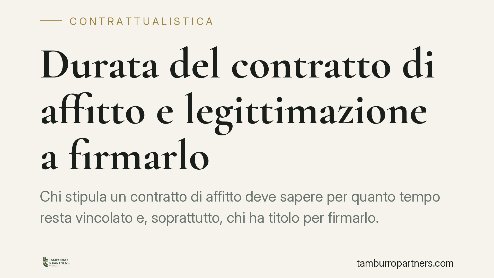

Durata del contratto di affitto e legittimazione a firmarlo
Chi stipula un contratto di affitto deve sapere per quanto tempo resta vincolato e, soprattutto, chi ha titolo per firmarlo. Non serve essere proprietari per concedere un immobile in locazione, ma i limiti di durata e le regole sul rinnovo incidono in modo diretto sui diritti delle parti. Un errore su questi punti può rendere il contratto inefficace o esporre a contenziosi.

Il quadro di partenza
La locazione è il contratto con cui una parte (il locatore) concede a un'altra (il conduttore) il godimento di un bene per un tempo determinato, dietro pagamento di un corrispettivo. La definizione è nell'art. 1571 c.c.
Due elementi meritano attenzione: la durata e la legittimazione a firmare. Sono aspetti che le parti tendono a dare per scontati e che invece generano la maggior parte delle contestazioni.
Durata minima e massima
Per gli immobili urbani a uso abitativo vige la disciplina speciale della legge 431/1998, che impone durate rigide: il contratto "ordinario" (cosiddetto 4+4) dura quattro anni, con rinnovo automatico per altri quattro; il contratto "concordato" (3+2) segue lo schema di tre anni più due. Sono durate minime inderogabili, poste a tutela del conduttore.
Per le locazioni non soggette alla legge speciale opera invece il limite generale dell'art. 1573 c.c.: la locazione non può eccedere i trent'anni. Se le parti pattuiscono un termine superiore, questo si riduce automaticamente a trenta.
Quanto al rinnovo tacito, l'art. 1597 c.c. stabilisce che, alla scadenza, se il conduttore resta nel godimento del bene senza opposizione del locatore, la locazione si rinnova alle stesse condizioni. Attenzione però: nelle locazioni abitative il rinnovo segue le regole speciali della legge 431/1998, che prevalgono sulla disciplina codicistica.
Chi può firmare: non solo il proprietario
Qui si concentra l'equivoco più frequente. Per concedere in locazione un immobile non occorre esserne proprietari. La legittimazione a stipulare spetta a chi ha il potere di disporre del godimento del bene.
Rientrano quindi tra i soggetti legittimati:
- l'usufruttuario, che ha per definizione il diritto di godere del bene e può locarlo per la durata del proprio diritto;
- il comproprietario, ma con un limite decisivo: la locazione di un bene comune è atto di ordinaria amministrazione solo se non supera i nove anni, altrimenti serve il consenso di tutti i contitolari secondo le quote;
- in alcuni casi il promissario acquirente immesso nel possesso dell'immobile prima del rogito, purché il preliminare gli attribuisca tale facoltà.
Non è invece legittimato, di regola, il nudo proprietario finché sull'immobile grava l'usufrutto altrui: il diritto di godere spetta all'usufruttuario, non a lui.
La Cassazione civile ha più volte ribadito che la locazione stipulata da chi non ha la disponibilità del bene resta valida tra le parti, ma è inefficace verso il vero titolare, che può recuperare l'immobile. Il conduttore in buona fede conserva l'azione risarcitoria verso chi ha firmato senza titolo.
Cosa cambia in concreto
Per il locatore significa una cosa semplice: prima di firmare va verificato di avere effettivamente il potere di locare, soprattutto in presenza di comproprietà o di diritti reali di godimento in capo a terzi.
Per il conduttore il tema è di sicurezza: firmare con chi non è titolare espone al rischio di perdere il bene. Un controllo preliminare sulla titolarità evita contenziosi costosi.
Cosa fare in concreto
- Verificate la titolarità prima della firma: chiedete la visura catastale e ipotecaria aggiornata dell'immobile e identificate chi ha il potere di locarlo.
- Individuate la disciplina applicabile: locazione abitativa (legge 431/1998) o locazione ordinaria (codice civile). Le durate e le regole di rinnovo cambiano radicalmente.
- In caso di comproprietà, acquisite il consenso scritto di tutti i contitolari se la durata supera i nove anni, o comunque per prudenza.
- Disciplinate il rinnovo per iscritto, indicando termini e modalità di disdetta, per non affidarvi al meccanismo tacito e alle sue insidie.
- Registrate il contratto nei termini di legge: la mancata registrazione incide sulla validità e sull'opponibilità del rapporto.
Un contratto ben impostato sin dall'origine riduce l'area del contenzioso. Quando la posizione dei firmatari non è lineare, consigliamo una verifica preventiva della legittimazione e della durata.
Disclaimer
Contributo informativo a cura di Tamburro & Partners - Avv. Giuseppe Tamburro. Non costituisce parere legale.
Ogni contratto ha il suo equilibrio.
Se vuoi una revisione delle clausole o una redazione su misura, scrivi allo studio. Ti rispondiamo entro un giorno lavorativo.